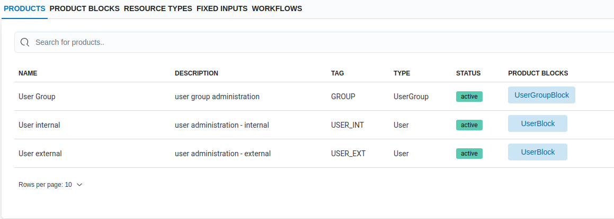

Database migration
Introduction
The orchestrator uses SQLAlchemy, the Python SQL toolkit and Object Relational Mapper, as interface to the database. Alembic, which is part of SQLAlchemy, is used for the creation, management, and invocation of database change management scripts.
Now that the product and product block domain models have been created, it is
time to create an Alembic database migration to insert this information into
the database. All the SQL statements needed for this migration can be written
by hand, but knowledge about the database tables and how they are used is
required to write correct statements. Luckily, the orchestrator comes with
helper functions, located at orchestrator/migrations/helpers, that produce
the needed SQL statements. These helper functions make use of a set of simple
data structures that describe the domain models and workflows that need to be
added to the database. Recently a third option was added, the orchestrator is
now able to detect differences between the database and the registered product
domain models and create all needed SQL statements for you.
Below we will make use of the ability of the orchestrator to create database migrations for us.
Exercise 1: add products to registry
In order to use the products that were defined earlier, the orchestrator needs
to know about their existence. This is done by adding the products with a
description to the SUBSCRIPTION_MODEL_REGISTRY.
The products can be added to the registry in main.py, but for this exercise
the registry will be updated by the products module, this keeps the
registration code close to the definition of the products and nicely separated
from the rest of the code.
Create the file products/__init__.py and add the following code:
from orchestrator.domain import SUBSCRIPTION_MODEL_REGISTRY
from products.product_types.user import User
from products.product_types.user_group import UserGroup
SUBSCRIPTION_MODEL_REGISTRY.update(
{
"User Group": UserGroup,
"User internal": User,
"User external": User,
}
)
To make Python execute this code, add the following import statement to
main.py:
import products
Exercise 2: create database migration
To manually create a database migration a Python environment is needed, as created with the manual installation steps, to run the orchestrator from the command line. When using Docker compose an example migration is being used.
Docker compose
Copy the example product and product block migration:
(
cd migrations/versions/schema
curl --remote-name https://raw.githubusercontent.com/workfloworchestrator/example-orchestrator-beginner/main/examples/2022-11-11_45984f4b8010_add_user_and_usergroup_products.py
)
Manual
The orchestrator command line interface offers the db migrate-domain-models
command to create a database migration based on the differences between the
database and the registered products. In most cases this command will be able
to detect all changes, but in more complex situations it will ask the user for
additional input to create the correct migration. For new products it will also
ask for user-friendly descriptions for the products, product blocks, resource
types and fixed inputs, as well as information that is not defined in the
domain models like product and product block tags, and values for the
fixed inputs to differentiate the products of the same product type.
Create the migration with the following command, have a look at the overview below when in doubt of the correct answer to the questions, and make sure that the product type entered exactly matches the product types defined in the domain models, including upper/lowercase:
PYTHONPATH=. python main.py db migrate-domain-models "Add User and UserGroup products"
When finished have a look at the migration created in the folder
migrations/versions/schema.
Note
While creating the migration, the order of the questions/answers may be different from the order in the overview below. Therefore do not blindly copy/paste the answers.
Example
Create new products
Product: UserGroup User Group
Supply the product description: user group administration
Supply the product tag: GROUP
Product: User User internal
Supply the product description: user administration - internal
Supply the product tag: USER_INT
Product: User User external
Supply the product description: user administration - external
Supply the product tag: USER_EXT
Create fixed inputs
Supply fixed input value for product User internal and fixed input affiliation: internal
Supply fixed input value for product User external and fixed input affiliation: external
Create product blocks
Product block: UserGroupBlock
Supply the product block description: user group block
Supply the product block tag: UGB
Product block: UserBlock
Supply the product block description: user block
Supply the product block tag: UB
Create resource types
Supply description for new resource type group_name: name of the user group
Supply description for new resource type group_id: id of the user group
Supply description for new resource type username: name of the user
Supply description for new resource type age: age of the user
Supply description for new resource type user_id: id of the user
Exercise 3: perform database migration
To create a representation of the products in the database that matches the domain models, the database migration created above is executed.
Docker compose
The Docker compose environment contains a initialization container that will always upgrade the database to the latest heads. To trigger this you only have to restart the environment.
Manual
One way to manually migrate to the latest schemas
is to explicitly upgrade the database to the revision that was just
created with db upgrade <revision>. Another way is to upgrade to the latest
heads again, as was done during the initialisation of the database.
PYTHONPATH=. python main.py db upgrade heads
Look at what the migration added to the database by either querying the database directly:
psql orchestrator-core
or by using the orchestrator API:
curl http://127.0.0.1:8080/api/products/ | jq
or by browsing through the orchestrator meta data through the GUI at:
http://localhost:3000/metadata/products
or all of the above.
The metadata/products page should look as following:

Example
if the database migration is incorrect, use this example Add User and UserGroup products migration